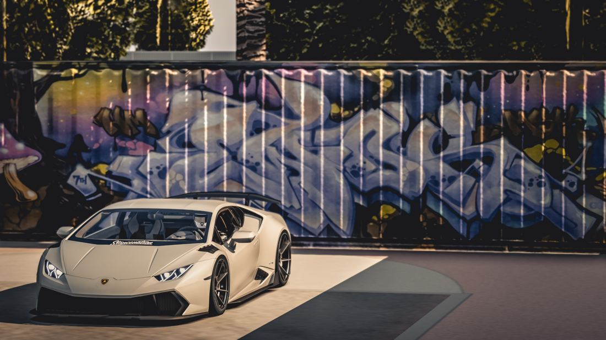
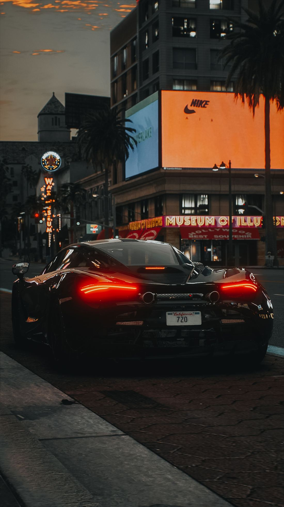

Depois de mais de uma década de espera desde o lançamento de GTA V, a Rockstar Games escolheu um caminho pouco convencional para mostrar, pela primeira vez, como Grand Theft Auto VI realmente se parece em movimento. Em vez de publicar o material diretamente no YouTube ou no site oficial, o estúdio fechou uma parceria inédita com a Netflix para exibir "GTA VI: Um Olhar Estendido" — um vídeo de cerca de 26 minutos com cenas de gameplay e cinemáticas — com seis horas de exclusividade na plataforma de streaming antes de liberar o conteúdo em qualquer outro canal.
O que aconteceu hoje
A apresentação estreou às 16h no horário de Brasília diretamente na Netflix, como um título comum do catálogo da plataforma — bastando ter uma assinatura ativa para assistir. Só às 22h, seis horas depois, o material chegou ao canal oficial da Rockstar no YouTube e ao site oficial do jogo. Segundo a Netflix e a própria Rockstar, é a primeira vez que uma produtora de games escolhe um serviço de streaming como palco de estreia de um material tão aguardado, em vez do tradicional lançamento simultâneo em redes sociais e YouTube.
Por que a Netflix, e não o YouTube primeiro?
Do ponto de vista de negócio, o movimento beneficia as duas partes. A Rockstar transforma o que seria "apenas" um trailer em um grande evento cultural, gerando cobertura de imprensa fora do universo gamer tradicional. Já a Netflix garante seis horas com uma das maiores audiências da internet com os olhos fixos na própria plataforma — um tipo de exposição difícil de comprar por qualquer outro meio. Nenhuma das duas empresas revelou publicamente se houve pagamento envolvido no acordo, mas o benefício mútuo é evidente: a Netflix ganha holofote, e a Rockstar transforma a divulgação do jogo em um acontecimento midiático maior do que um simples upload de vídeo.
Turbulência antes da estreia: a semana dos vazamentos
A apresentação de hoje não chegou em um momento tranquilo para a Rockstar. Desde o dia 18 de agosto, um grupo (ou pessoa) que se identifica como "Cyberleek" vinha divulgando vídeos obtidos de uma versão de testes do jogo — ao todo, mais de 15 clipes vazaram ao longo da semana, mostrando trechos de jogabilidade antes da divulgação oficial. Na quarta-feira (26), véspera do evento, a própria Rockstar confirmou que os vazamentos eram genuínos e classificou o episódio como "devastador" para a equipe de desenvolvimento. Mesmo assim, a empresa manteve a apresentação programada para o dia seguinte, sem qualquer adiamento.
O que aparece no gameplay estendido
O material mostra os dois protagonistas do jogo, Jason e Lucia, tanto em cenas cinemáticas quanto em jogabilidade direta, percorrendo a Vice City fictícia e outras regiões do estado de Leonida — a versão da Rockstar para a Flórida. Uma das primeiras cenas mostradas acompanha a dupla entrando em um prédio de apartamentos em busca de alguém apelidado de "Boobie" para acertar um trabalho, já estabelecendo o tom de conspiração criminosa que guia a narrativa do jogo.
De acordo com a descrição oficial divulgada pela própria Rockstar, "Jason e Lucia sempre souberam que o jogo estava marcado contra eles. Mas quando um golpe fácil dá errado, os dois se veem no lado mais sombrio do lugar mais ensolarado da América, no meio de uma conspiração criminosa que se espalha por todo o estado de Leonida — forçados a confiar um no outro mais do que nunca para sair vivos."
Assim como nos trailers anteriores, chama atenção o quanto o jogo abraça a estética das redes sociais contemporâneas: turistas filmando cenas de crime com o celular, personagens estilo influenciador digital e um recorte inteiro dedicado a uma rede social fictícia dentro do próprio jogo — um comentário bem-humorado (e nada sutil) sobre a cultura de viralização em que vivemos.

Foto: Pexels
O que a imprensa e os criadores de conteúdo estão achando
A repercussão foi imediata entre veículos especializados e criadores de conteúdo. A reação mais recorrente é de surpresa com o nível de detalhe do mundo aberto: a partir de imagens aéreas de Vice City, é possível identificar dezenas de prédios distintos, uma base militar, áreas portuárias, bairros com estética bem mais "suja" e uma malha viária extremamente complexa — o tipo de detalhe que costuma gerar comentários de "nunca vi isso em um jogo antes" em comunidades de discussão sobre games.
Nem toda reação foi só entusiasmo, no entanto. Parte da imprensa especializada em games ponderou que, apesar do visual impressionante, as missões mostradas ainda seguem uma estrutura bastante familiar para quem já jogou títulos anteriores da Rockstar — uma mistura de "impressionado com a cidade, mas com pé atrás quanto à fórmula de missões". É um equilíbrio comum em coberturas de pré-lançamento: elogiar a tecnologia sem cravar ainda se a experiência de jogo em si vai trazer novidades reais.
Do lado da cultura pop, um dos efeitos colaterais mais curiosos apareceu depois do segundo trailer oficial, lançado em 2025: a canção "Hot Together", da banda The Pointer Sisters, usada na trilha sonora do vídeo, teve um salto de mais de 180 mil por cento nas reproduções no Spotify — um lembrete de como o alcance cultural de GTA vai muito além do público que efetivamente joga video game.

Foto: Pexels
Quando o jogo é lançado, afinal?
A data oficial continua sendo 19 de novembro de 2026, para PlayStation 5 e Xbox Series X|S. Uma versão para PC ainda não foi confirmada oficialmente pela Rockstar — rumores do setor apontam para um possível lançamento em 2027, seguindo o padrão adotado pela produtora em jogos anteriores, que costumam chegar ao computador bem depois do console.
Um detalhe chamou atenção nos bastidores da distribuição: as caixas físicas do jogo não vão trazer disco. Em vez do Blu-ray tradicional, o comprador vai encontrar apenas um código de download impresso dentro da embalagem — uma mudança que a Rockstar atribui à redução de custos de fabricação e transporte, já que o tamanho do jogo pode chegar perto de 200 GB.
Quanto vai custar GTA 6 no Brasil
A pré-venda já está oficialmente aberta na PlayStation Store e na Microsoft Store, com dois valores:
| Edição Standard | R$ 449,90 |
| Edição Ultimate | R$ 549,90 |
Quem pré-compra qualquer uma das edições garante o Pacote Vintage Vice City, um mês grátis do serviço GTA+ (na versão digital), o veículo clássico Vapid Stanier 1995 com garagem em Ocean Beach, roupas de época para Jason e Lucia, e uma skin de arma inspirada no visual de Tommy Vercetti — uma homenagem direta ao protagonista do clássico GTA: Vice City, de 2002. A edição Ultimate soma a isso conteúdos extras de campanha, como a Garagem Paradise e um arsenal temático de armas customizadas.
Vale um alerta prático: como o jogo só tem lançamento confirmado para PS5 e Xbox Series X|S, qualquer "instalador para PC" circulando por fóruns ou redes sociais antes do lançamento oficial é, no mínimo, motivo de desconfiança — especialistas em segurança já registram golpes usando o hype de GTA 6 como isca para malware.
Vale a pena se animar?
Descontado o entusiasmo natural em torno do que já é tratado como um dos maiores lançamentos de entretenimento da história — não só de games —, vale manter os pés no chão em dois pontos específicos. Primeiro, o histórico recente do próprio jogo: GTA 6 já foi adiado mais de uma vez desde o anúncio original, e parte do público segue cauteloso quanto à data de novembro se manter até o fim. Por outro lado, a Rockstar não costuma adiar jogos tão perto da data oficial, e o volume de investimento em marketing — incluindo a própria parceria com a Netflix e a pré-venda já aberta — é um sinal de que a produtora está confiante no cronograma atual.
Segundo ponto: o preço. Com a edição mais completa passando de R$ 500, GTA 6 desponta como um dos jogos mais caros já lançados no Brasil, refletindo uma tendência mais ampla de alta nos preços de games de grande orçamento nesta geração de consoles.
De qualquer forma, o fato é que, pela primeira vez em anos, existe finalmente material oficial e extenso para analisar — o que deve manter a conversa em alta até novembro.
Este artigo contém links de afiliado do Mercado Livre. Se você comprar por eles, o TecnoAchados pode ganhar uma comissão, sem custo extra para você.